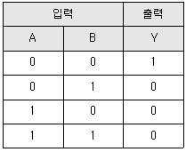
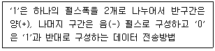
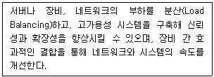
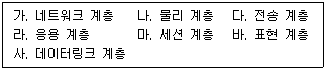
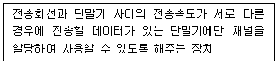
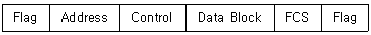
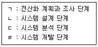
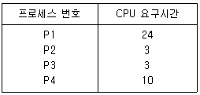
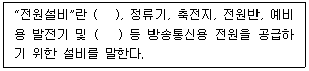
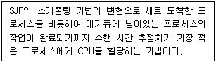

정보통신산업기사 (2022-06-25 기출문제)
1과목: 디지털전자회로
1. 다음 중 시간영역의 정보를 주파수 영역으로 변환하여 측정하는 장비로 맞는 것은?
- 파워서플라이
- 오실로스코프
- 스펙트럼 분석기
- 정전압기
(정답률: 73%)

2. 다음은 OFDM(Orthogonal Frequency Division Multiplexing)방식의 특징에 대한 설명이다. 맞지 않는 것은?
- 다중경로 및 도플러 특성에 강하다.
- 광대역 간섭에 강하다.
- 복잡한 등화기를 필요로 하지 않는다.
- 주파수 효율성이 좋다.
(정답률: 63%)
3. 다음 중 음성의 디지털 부호화 기술 중에서 파형 부호화 방식이 아닌 것은?
- LPC
- PCM
- DPCM
- DM
(정답률: 73%)
4. 다음 중 LC 발진기에 해당되지 않는 것은?
- 콜피츠 발진기
- 하틀리 발진기
- 클래프 발진기
- 위상천이 발진기
(정답률: 72%)
5. 각 펄스에 대한 직류성분을 제거시키고 동기유지와 전송대역폭을 줄이는 방법으로 바이폴라(Bipolar) 방식과 맨체스터(Manchester) 방식을 결합한 것은?
- 차동(Differential) 부호 방식
- 다이코드(Dicode) 방식
- CMI(Coded Mark inversion)방식
- HDB(High Density B ipolar)3 방식
(정답률: 72%)
6. 동축케이블과 광케이블의 혼합망으로 방송국에서 원거리까지 광케이블을 이용하여 전송하고, 광단국에서 가입자까지는 동축케이블을 이용한 망은?
- FTTH
- FTTO
- HCO
- HFC
(정답률: 70%)
7. 다음 진리표에 해당되는 논리 게이트는?

- AND
- OR
- NAND
- NOR
(정답률: 72%)
8. 다음은 직접 시퀀스 확산대역(DSSS: Direct Sequence Spread Spectrum)방식에 대한 설명으로 옳지 않은 것은?
- 다중경로 페이딩에 강하다.
- 신호 검파시 시간상관 함수를 사용한다.
- 의도적인 간섭에 강하다.
- 신호 동기 포착 시간이 길다.
(정답률: 50%)
9. 전송매체의 전송 주파수가 높을수록 전류가 도체표면을 따라 흐르는 현상을 무엇이라 하는가?
- 누화효과
- 유도효과
- 표피효과
- 절연효과
(정답률: 75%)
10. 다음 중 대역확산 방식의 장점이 아닌 것은?
- 방해파 억압
- 에너지 밀도 증가
- 비화특성 우수
- 다중 엑세스
(정답률: 78%)
11. 다음은 BER(Bit Error Ratio)에 대한 설명으로 틀린 것은?
- 보통 링크의 수가 많을수록 커진다.
- 통화량이 적을수록 커진다.
- 디지털통신에서 비트 오류는 품질 저하의 주된 원인이다.
- 전송된 총 비트당 오류 비트 비율이다.
(정답률: 70%)
12. 데이터 전송 방식 중 전송 방향에 따른 분류에 속하지 않는 것은?
- 단방향 전송방식
- 혼합동기 방식
- 반이중 방식
- 전이중 방식
(정답률: 73%)
13. 다음 중 이동통신망에서 인접 셀간에 간섭 신호를 감소시키는 방법으로 틀린 것은?
- 기지국의 수신 안테나를 Diversity 방식으로 구성한다.
- 지형에 맞는 안테나를 사용한다.
- 기지국의 출력과 안테나의 높이를 감소시킨다.
- 기지국 안테나의 기울기를 조정한다.
(정답률: 68%)
14. 디지털 정보통신시스템이 9,600[bps]로 동작하여야 할 경우 신호요소가 4[bit]로 인코드된다면 이상적인 전송채널에서 최소 얼마의 대역폭을 가져야 하는가?
- 1,200[Hz]
- 2,400[Hz]
- 4,800[Hz]
- 9,600[Hz]
(정답률: 83%)
15. 다음 중 무선송신기에 수정진동자를 사용하는 이유로 가장 적합한 것은?
- 주파수 안정도가 높기 때문이다.
- 고조파를 쉽게 얻을 수 있기 때문이다.
- 일그러짐이 적은 파형을 얻기 위해서이다.
- 발진주파수를 쉽게 변경할 수 있기 때문이다.
(정답률: 68%)
16. 다음 중 광섬유의 장점으로 틀린 것은?
- 대역폭이 대단히 넓다.
- 보안성이 우수하다.
- 전자기 간섭에 강하다.
- 배선공간 등의 측면에서 활용성이 어렵다.
(정답률: 76%)
17. 다음 중 발진기에서 이용되는 궤환회로로 맞는 것은?
- 정궤환회로
- 부궤환회로
- 정궤환과 부궤환 모두 사용한다.
- 궤환회로를 사용하지 않는다.
(정답률: 72%)
18. 다음 중 No.7 신호방식의 프로토콜 계층 구조로 틀린 것은?
- 메세지 전송부
- 신호접속 제어부
- 이용자부
- 주소부
(정답률: 61%)
19. 다음 설명에 해당하는 것은 무엇인가?

- 바이폴라 펄스
- 맨체스터 펄스
- 차동 펄스
- 단주(단류) RZ 펄스
(정답률: 74%)
20. 다음 중 국간 중계선 신호방식의 설명으로 틀린 것은?
- 교환기 간의 신호방식이다.
- 통화로 신호방식이다.
- 공통선 신호방식이다.
- 전화기와 지역교환기 사이의 구간이다.
(정답률: 61%)
2과목: 정보통신기기
21. 다음 중 디지털TV와 IPTV 방송의 영상압축 전송기술 방식이 아닌 것은?
- MPEG4
- H.264
- MPEG2
- AC3
(정답률: 76%)
22. 확산대역(Spread Spectrum)통신의 기반이 되는 샤논(Shannon)의 채널용량에 대한 설명으로 틀린 것은?
- 채널용량은 잡음에 관계없이 전송에 사용되는 주파수 대역폭에 비례한다.
- 통신시스템의 실제 성능이 이론적으로 가능한 최대 성능과 얼마나 차이가 나는지를 알려주는 지표로 사용한다.
- 채널용량도 수신 신호의 SNR의 증가에 비례하여 증가한다.
- 잡음이 존재하는 곳에서 신뢰할만한 통신이 가능한 이론적인 한계치를 제시한다.
(정답률: 58%)
23. ONT(Optical Network Terminal) 및 ONU(Optical Network Unit)에 대한 설명 중 틀린 것은?
- ONT는 종단장치로서 PC와 연결할 수 있는 광모뎀과 같은 것을 의미한다.
- ONU는 가입자 또는 사업자 밀집 지점까지 광케이블을 설치할 수 있는 종단장치이며 통신시설용 케비넷에 수용된다.
- 통상적으로 ONU는 국사측의 OLT(Optical Line Terminal)와 점대점으로 연결된다.
- ONT/ONU는 AON(Active Optical Network) 방식으로 광 케이블을 사용하기 위한 것이다.
(정답률: 61%)
24. 다음 중 단말기기의 전송제어 기능이 아닌 것은?
- 회선접속 제어 기능
- 입출력제어 기능
- 신호변환 제어기능
- 회선제어 기능
(정답률: 59%)
25. 네트워크 카메라에 대한 설명으로 잘못된 것은?
- 네트워크 인프라를 기반으로 한 감시 카메라를 말한다.
- 카메라에서 이미 인코딩된 비디오 스트림을 녹화한다.
- LAN 포트를 통해 기록된 영상을 중앙 저장소로 전송한다.
- 디지털 비디오 녹화기(DVR) 라고도 한다.
(정답률: 61%)
26. 다음 중 디지털서비스장치(DSU)에서 장치간에 통신을 행하기 전에 공통 프로토콜과의 합의사항으로 틀린 것은?
- 전송속도
- 패리티 비트의 체크방법
- 에러 회복 방법
- 데이터의 총용량
(정답률: 75%)
27. 월 패드가 제공하는 서비스가 아닌 것은?
- 도어폰 및 로비폰 등 방문자 확인서비스
- 경비실 통화서비스
- 세대간 통화서비스
- IP 주소변환서비스
(정답률: 81%)
28. 음성신호를 패킷 데이터로 변환하여 인터넷 망에서 전화 서비스를 제공하는 것은?
- WiBro
- Telematics
- WCDMA
- VoIP
(정답률: 73%)
29. 다음 중 동기식 변복조기에서 주로 사용되는 변조 방식은?
- 진폭 편이 변조(ASK)
- 주파수 편이 번조(FSK)
- 위상 편이 변조(PSK)
- 위상 변조(PM)
(정답률: 63%)
30. 정보 단말기의 기능 중 사람이 식별 가능한 데이터를 통신 장비가 처리 가능한 2진 신호로 변환하거나 그 역(逆)을 행하는 기능은?
- 신호 변환 기능
- 입·출력 기능
- 송·수신 제어 기능
- 에러 제어 기능
(정답률: 64%)
31. 100[mW]의 신호 전력을 [dBm]으로 환산하면 얼마인가?
- 10[dBm]
- 20[dBm]
- 30[dBm]
- 40[dBm]
(정답률: 62%)
32. GPS 위성을 통한 위치정보와 이동통신망을 활용하여 운전자 및 탑승자에게 각종 서비스를 제공하는 것은?
- 텔레메터링
- 텔레텍스
- 텔레메틱스
- 비디오텍스
(정답률: 73%)
33. 다음 중 WPAN(Wireless Personal Area Network) 방식이 아닌 것은?
- 블루투스
- UWB
- Zigbee
- 위성통신
(정답률: 66%)
34. 다음 중 광가입자망의 가입자별로 하나의 파장을 대응시켜 고속전송이 가능한 방식은?
- FDM 방식
- TDM 방식
- SDM 방식
- WDM 방식
(정답률: 69%)
35. 블루투스3.0 단말기의 최대 전송속도는 얼마인가?
- 1[Mbps]
- 3[Mbps]
- 24[Mbps]
- 100[Mbps]
(정답률: 68%)
36. CATV방송에서 입력측 (C/N)=20, 출력측 (C/N)=10 이라고 가정하면 잡음지수(Noise Factor)는?
- 0.5
- 1
- 2
- 3
(정답률: 72%)
37. 영상회의시스템의 영상 압축방식을 활용하고자 할 때, 가장 영상압축율이 좋은 방식은?
- MPEG-1
- MPEG-2
- H.261
- H.264
(정답률: 71%)
38. 커넥티드 카(Connected Car)에 대한 설명으로 옳지 않은 것은?
- 통신망에 연결된 자동차를 말한다.
- 다른 차량이나 교통 및 통신 인프라, 보행자 단말 등과 실시간으로 통신한다.
- 교통 센터에서 교통 안전 지원, 실시간 길 안내, 차량 점검 서비스 등을 받을 수 있다.
- 통신 수단으로 WPAN, Bluetooth 등이 사용된다.
(정답률: 70%)
39. 다음 중 IPTV의 특성에 대한 설명으로 틀린 것은?
- IPTV 시스템의 양방향성은 서비스 제공자가 많은 상호작용 TV의 응용을 제공할 수 있다.
- 디지털 녹화기와 결합된 IPTV는 프로그램 콘텐츠의 타임시프팅(Time Shifting)을 허용한다.
- 서비스 제공자가 요청한 채널만 전송하므로 네트워크상의 대역폭을 절약할 수 있다
- 실시간 채널이나 UHDTV 등의 초고화질 프로그램이 늘어나더라도 고스트 현상이나 끊김 현상은 발생하지 않는다.
(정답률: 70%)
40. CATV에 대한 설명으로 잘못된 것은?
- 케이블을 이용해 가입자에게 프로그램을 전송하는 통신시스템이다.
- 영상, 음성, 음향등을 유선선로를 통해 일반 수신자에게 송신하는 다채널 방송이다.
- 기존의 TV프로그램을 전송하는데 그치고 있다.
- 헤드엔드, 중계전송망, 가입자 단말장치로 구성된다.
(정답률: 76%)
3과목: 정보전송개론
41. LAN장비에서 허브의 종류가 아닌 것은?
- 더미 허브(Dummy Hub)
- 스태커블 허브(Stackable Hub)
- 라우터 허브(Router Hub)
- 인텔리전트 허브(Intelligent Hub)
(정답률: 68%)
42. 라우터에서 사용하는 라우팅 프로토콜이 아닌 것은?
- RIP
- IGRP
- OSPF
- SMTP
(정답률: 63%)
43. 5세대(5G) 이동통신시스템 기술에 대한 설명으로 틀린 것은?
- LTE-Advanced Pro 기술을 기반으로 3GPP Release 15부터 정의한 것이다.
- 5G ITU 공식명칭은 IMT-2020이지만 3GPP에서는 NR(New Radio)이라고도 한다.
- 새로운 주파수 대역으로 1.8GHz 대역과 3.5GHz 대역을 할당하였다.
- 5G의 서비스 특징은 4G 대비 초고속, 초연결, 초저지연으로 표현된다.
(정답률: 66%)
44. 다음 내용은 어떤 장비에 대한 설명인가?

- L2 스위치
- L3 스위치
- L4 스위치
- 리피터
(정답률: 63%)
45. 다음 중 WAN(Wide Area Network)의 전송 방식이 아닌 것은?
- Leased Line
- Circuit Switched
- Packet Switched
- Layer(L2) Switched
(정답률: 65%)
46. 인공위성을 이용하여 위치, 속도 및 시간 측정을 가능하게 해주는 시스템은?
- GPS
- DMB
- VRS
- ARS
(정답률: 81%)
47. 다음 중 Port 기반 VLAN의 구성에 대한 설명으로 맞는 것은?
- 스위치 포트를 각 VLAN에 할당하는 것으로 가장 많이 사용한다
- 호스트들의 MAC Address를 모두 등록해야 하므로 자주 사용되지 않는다
- 다른 VLAN과 통신하려면 라우터를 이용한다
- 같은 통신 프로토콜(TCP/IP, IPX/SPX 등등)을 가진 호스트끼리만 통신이 가능하다
(정답률: 53%)
48. 인터넷의 TCP와 UDP는 OSI 7계층 기준 모델이 어디에 해당되는가?
- 물리 계층
- 데이터링크 계층
- 네트워크 계층
- 전송 계층
(정답률: 67%)
49. 서브넷 사용의 이유로 틀린 것은?
- 도메인 크기를 증가시키기 위해
- 적절한 크기로 네트워크를 분할하기 위해
- 한 회사나 조직에서 서로 다른 LAN 기술을 사용하기 위해
- 트래픽의 혼잡을 줄여 네트워크 관리와 유지보수를 용이하게 하기 위해
(정답률: 62%)
50. WAN, MAN, LAN 등의 서로 다른 네트워크 간에 통신하는 장치로 맞는 것은?
- 라우터
- 스위치
- 브리지
- 허브
(정답률: 70%)
51. 다음 중 SONET의 전송속도의 내용으로 틀린 것은?
- 프레임이 초당 8000번 전달되기 때문에 STS-1의 전송속도는 51.84[Mbps]이다.
- 프레임당 36바이트의 오버헤드가 있기 때문에 상위계층 프로토콜에서 이용할 수 있는 순수한 데이터 전송속도는 49.536[Mbps]이다.
- 36바이트의 오버헤드 가운데 시스템 관리를 위한 27바이트를 제외한 9바이트는 SONET의 페이로드에 포함된다.
- SONET은 Megabit급 이하의 전송속도를 가진다.
(정답률: 58%)
52. 다음 중 가상사설망(VPN)에서 기본적으로 필요한 요소로 틀린 것은?
- VPN에 접근하는 사용자의 인증
- 주소의 비공개성을 보호하기 위한 주소 관리
- 공용망을 통과하는 데이터에 대한 비인증 클라이언트의 데이터 활용
- 서버와 클라이언트 상호간에 사용될 암호화 키를 생성하거나 갱신하는 키 관리
(정답률: 60%)
53. 인터넷상에서 누구나 로그인 할 수 있는 FTP서버는?
- User FTP 서버
- Application FTP 서버
- Public FTP 서버
- Anonymous FTP 서버
(정답률: 67%)
54. IPv4의 주소체계는 몇 비트로 구성되어 있는가?
- 16[bit]
- 32[bit]
- 64[bit]
- 128[bit]
(정답률: 68%)
55. 다음 보기는 OSI 7계층을 나타낸 것이다. 하위 계층부터 상위 계층 순서대로 나열한 것은?

- 나→사→가→다→마→라→바
- 나→사→다→가→마→바→라
- 나→사→가→다→마→바→라
- 나→사→다→가→바→마→라
(정답률: 73%)
56. 다음 중 SDH 전송속도로 틀린 것은?
- STM-1 : 155.520[Mbps]
- STM-4 : 622.080[Mbps]
- STM-8 : 1,244.016[Mbps]
- STM-16 : 2,488.320[Mbps]
(정답률: 67%)
57. UDP(User Datagram Protocol)를 사용하는 애플리케이션은 무엇인가?
- DHCP
- FTP
- HTTP
- Telnet
(정답률: 55%)
58. 다음 설명에 해당하는 것은 어느 것인가?

- 역다중화기
- 집중화기
- 모뎀
- 디지털서비스유니트(DSU)
(정답률: 61%)
59. 다음 중 라우터(Router)에 대한 설명으로 알맞은 것은?
- 통신망의 병목현상을 줄이고자 서로 다른 물리적 매체로 구성된 통신망을 연결할 때 사용한다.
- 디지털 신호를 아날로그 전송회선에 적합하도록 변조하여 수신측에 원래의 신호로 변환하는 것이다.
- 두 개의 근거리 통신망(LAN)을 서로 연결해 주는 통신망 연결 장치이다.
- 어떤 통신망 내에서의 트래픽 흐름의 경로를 결정하여 메시지 전달을 신속히 처리하기 위한 장치이다.
(정답률: 52%)
60. 다음 HDLC 프레임에서 CRC 기법에 의해 계산된 에러 검사용 정보를 나타내는 것은?

- Flag
- Address
- Control
- FCS
(정답률: 67%)
4과목: 전자계산기일반 및 정보설비기준
61. 다음 중 구내통신선로설비의 회선을 충분히 확보하여야 하는 사항이 아닌 것은?
- 구내로 인입되는 국선의 수용
- 구내회선의 구성
- 단말장치간의 상호연동
- 단말장치 등의 증설
(정답률: 50%)
62. 다음 중 가상화에 대한 설명이 틀린 것은?
- 하드웨어를 논리적으로 나누어서 운영 체제에 제공할 수 있는 기술이다.
- 나누어진 공간 안에서 사용되는 운영 체제끼리 서로 알 수 없도록 보안상 구분하는 기술이다.
- 가상화 기술 위에서 동작하는 가상 컴퓨터들은 하위 하드웨어의 종류나 동작 방식을 알 수 없다.
- 가상화 기술을 사용하므로 하드웨어가 필요 없다.
(정답률: 70%)
63. 다음 중 컴퓨터 제어장치의 기능이 아닌 것은?
- 기억 장치에 축적되어 있는 명령을 해독하고 해당하는 장치의 동작을 지시한다.
- 산술논리연산의 실행을 지시한다
- 프로그램상의 비교판단을 수행한다
- 중앙처리장치의 내·외부 자료의 전송을 담당한다
(정답률: 44%)
64. 사설망(Private Network)에서 사용하는 IP Address를 공인망(Public Network)에서 사용할 수 있는 IP Address로 매핑하여, 공인망에서도 통신이 가능하도록 도와주는 기능을 하는 것은?
- 방화벽(Firewall)
- VPN(Virtual Private Network)
- NAT(Network Address Translation)
- 라우터(Router)
(정답률: 68%)
65. 다음 중 블록 알고리즘의 종류와 특징을 바르게 연결한 것은 무엇인가?
- IDEA : 1990년 유럽에서 개발되었으며, PGP를 채택한 8라운드 알고리즘
- RC5 : 2000년 AES알고리즘으로 선정되어 10/12/14/ 라운드의 블록 알고리즘
- CRYPTON : 1999년 한국 표준 블록 알고리즘으로 16라운드에 128키를 갖고 있다.
- Rijndael : 1994년 미국에서 개발되었으며, 속도가 빠르고 알고리즘이 간단하며 64비트블록에 16라운드이다
(정답률: 61%)
66. 컴퓨터의 연산장치에서 산술·논리연산 결과를 일시적으로 보관하는 장치는?
- 누산기(Accumulator)
- 데이터 레지스터(Data Register)
- 감산기(Substracter)
- 상태 레지스터(Status Register)
(정답률: 63%)
67. 공동주택에 홈네트워크 설비를 설치하기 위한 공간으로 틀린 것은?
- 세대단자함 또는 세대통합관리반
- 통신배관실(TPS실)
- 집중구내통신(MDF실)
- 공시청단자함
(정답률: 71%)
68. 선로설비의 회선 상호 간, 회선과 대지 간 및 회선의 심선 상호 간의 절연저항은 직류 500볼트 절연저항계로 측정하면 얼마 이상이어야 하는가?
- 5[MΩ]
- 10[MΩ]
- 20[MΩ]
- 40[MΩ]
(정답률: 61%)
69. 다음 보기의 전산시스템 개발 단계를 순서대로 나열한 것은?

- ㄱ – ㄴ – ㄷ - ㄹ
- ㄱ – ㄷ – ㄴ - ㄹ
- ㄷ – ㄱ – ㄴ - ㄹ
- ㄷ – ㄴ – ㄱ - ㄹ
(정답률: 65%)
70. 다음과 같은 상황에서 FCFS(First Come First Service) 알고리즘을 적용하였을 때 프로세스 완료 순서는?

- P1 – P2 – P3 - P4
- P2 – P3 – P4 - P1
- P4 – P3 – P2 - P1
- P1 – P4 – P2 - P3
(정답률: 66%)
71. 정보통신망 안정성 확보를 위한 정보보호 사전점검 순서로 맞는 것은?
- 사전점검 준비 → 설계 검토 → 보호대책 적용 → 보호대책 구현현황 점검 → 사전점검 결과 정리
- 사전점검 준비 → 보호대책 적용 → 설계 검토 → 보호대책 구현현황 점검 → 사전검검 결과 정리
- 사전점검 준비 → 보호대책 적용 → 보호대책 구현현황 점검 → 설계 검토 → 사전검검 결과 정리
- 사전점검 준비 → 보호대책 구현현황 점검 → 설계 검토 → 보호대책 적용 → 사전점검 결과 정리
(정답률: 62%)
72. 다음 중 출력장치에 해당하지 않는 것은
- 광학문자판독기(OCR)
- 종이테이프 천공기(Paper Tape Punch)
- 카드 천공기(Card Punch)
- 프린트장치(Line Printer)
(정답률: 73%)
73. 데이터 검증 방법에 대한 설명이 틀린 것은?
- 응용 프로그램을 통한 데이터 전환의 정합성을 검증한다.
- 로그 검증 외에 별도로 요청된 검증 항목은 검증하지 않는다.
- 데이터 전환 과정에서 작성하는 추출, 전환, 적재로그를 검증한다.
- 사전에 정의된 업무 규칙을 기준을 데이터 전환의 정합성을 검증한다.
(정답률: 71%)
74. 방송통신설비에 사용하는 용어 중 전원설비에 대한 설명이다. 괄호에 들어갈 내용으로 맞게 나열된 것은?

- 수변전장치, 배선
- 수변전장치, 접지
- 변압장치, 배선
- 변압장치, 접지
(정답률: 62%)
75. 다음 중 컴퓨터 시스템의 기억장치에 대한 설명으로 틀린 것은?
- 기억장치(Memory unit)는 컴퓨터 시스템을 구동시키는 프로그램을 저장한다.
- 기억장치는 중앙처리장치를 통해 입력된 데이터를 저장하는 장치이다.
- 기억장치는 주기억장치와 보조기억장치로 나누어진다.
- 주기억 장치(main memory 또는 Primary memory)는 컴퓨터 내부에 장치되어 있는 것으로 내부 기억장치라고도 하는데 중앙처리장치와 직접 자료 교환이 가능하며 프로그램과 데이터를 저장하고 ROM과 RAM이 있다.
(정답률: 44%)
76. 다양한 콘텐츠를 제공자한테서 고객에게 안전하게 전달하고, 고객이 불법적으로 콘텐츠를 유통하지 못하도록 하는 기술로, 암호화 기술을 이용하여 사용 권한을 만족하는 사용자에게만 디지털 콘텐츠 사용을 허가하는 개념을 포괄하는 기술은 무엇인가?
- DRM
- PKI
- DOI
- INDECS
(정답률: 60%)
77. 다음 중 PC의 TCP/IP 설정을 표시하는 명령어는?
- ipconfig
- ping
- tracert
- nslookup
(정답률: 77%)
78. 다음중 정보통신공사업법에 의한 정보통신공사의 감리에 대한 설명으로 옳은 것은?
- 품질관리·시공관리 및 안전관리에 대한 지도 등에 관한 발주자의 권한을 대행하는 것
- 유지관리·시공관리 및 설계관리에 대한 지도 등에 관한 발주자의 권한을 대행하는 것
- 공사관리·기술관리 및 유지관리에 대한 지도 등에 관한 발주자의 권한을 대행하는 것
- 기술관리·공사관리 및 안전관리에 대한 지도 등에 관한 발주자의 권한을 대행하는 것
(정답률: 62%)
79. 다음 설명은 어떤 스케줄링에 해당하는가?

- RR
- MFQ
- SRT
- FIFO
(정답률: 70%)
80. 다음 중 정보통신공사시 '감리'의 역할이 아닌 것은?
- 설계도서에 의해 시공되는지 감독
- 관련규정에 의해 시공되는지 감독
- 품질관리에 대한 지도
- 공사와 관련된 인허가 업무 수행
(정답률: 66%)